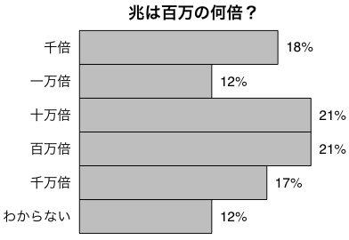
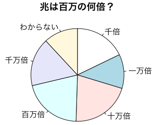

Poll: How many millions are in a trillion? - Econ4U.org というアンケートの結果です。
 
棒グラフ：
# quartz(width=4.882874, height=3.507874)
par(mar=c(1,6,3,4)+0.1) # マージン c(5,4,4,2)+0.1
par(xpd=TRUE) # プロットエリア外に text() を描く
選択肢 = c("千倍","一万倍","十万倍","百万倍","千万倍","わからない")
値 = c(18,12,21,21,17,12)
barplot(値[6:1], horiz=TRUE, axes=FALSE, space=0)
text(0, (5:0)+0.45, 選択肢, pos=2, family="HiraKakuPro-W3")
text(値, (5:0)+0.45, paste(値,"%",sep=""), pos=4)
mtext("兆は百万の何倍？", cex=1.2, family="HiraKakuPro-W6")
円グラフ：
pie(値, labels=選択肢, clockwise=TRUE, family="HiraKakuPro-W3")
mtext("兆は百万の何倍？", cex=1.2, family="HiraKakuPro-W6")
円グラフは割合の違いが読み取りにくいことがわかると思います。
昔は trillion は米国では 1012，英国などでは 1018 でしたが，次第に米国の用法が広まり，英国も1974年に公式に 1012 に移行しました（Wikipedia の Long and short scales に解説があります）。なお，このアンケートは選択肢に 1018 を含んでいませんし，対象も米本国在住者に限っていますので，古い用法が原因で正解が少ないわけではなさそうです。オバマ大統領が不況対策に trillion dollars を費やすと言っていますが，多くの米国人は理解していないというわけです。
Last modified: 2009-05-09 16:28:26